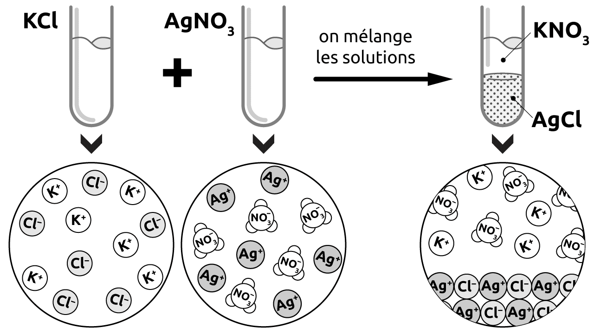
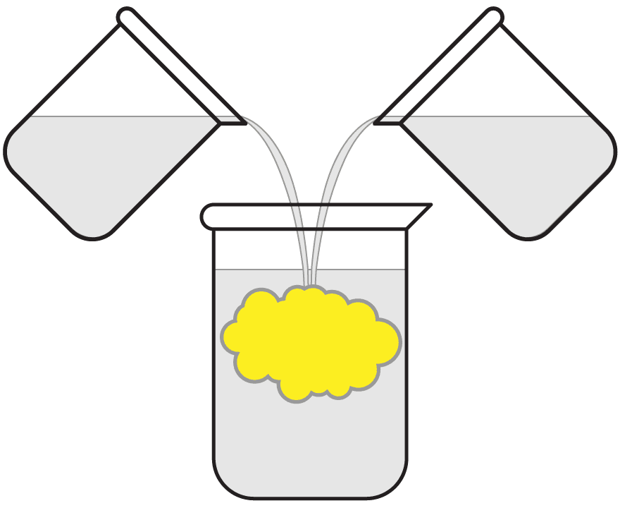
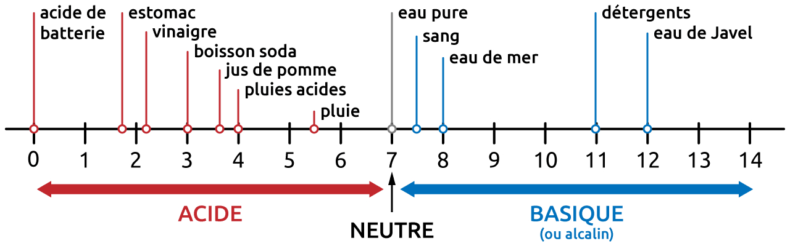

12 Types de réactions
- Identifier les différents types de réactions.
- Compléter et équilibrer une équation de réaction.
- Expliquer la notion d’acidité, de basicité et de neutralité, d’indicateur coloré et de pH.
12.1 Réactions de combinaison
Une réaction de combinaison est une réaction dans laquelle deux ou plusieurs réactifs forment un seul produit.
\[ A\ +\ B\ \longrightarrow\ C \]
Par exemple:
\[ \begin{split} \ce{C + O2 -> CO2} \end{split} \qquad \begin{split} \ce{N2 + 3H2 -> 2NH3} \end{split} \]
Si un élément a plusieurs nombres d’oxydation possibles, on écrira une équation pour chaque nombre d’oxydation.
\[ \begin{split} \ce{2Fe + O2 -> 2FeO} \quad (\ce{Fe}^{2+}) \\ \ce{4Fe + 3O2 -> 2Fe2O3} \quad (\ce{Fe}^{3+}) \end{split} \]
Complétez et équilibrez les équations de combinaison suivantes.
\[\ce{K} \qquad + \qquad \ce{Cl2} \qquad \ce{->} \qquad\underline{\hspace{1.5cm}}\]
\[\ce{Al} \qquad + \qquad \ce{Br2} \qquad \ce{->} \qquad\underline{\hspace{1.5cm}}\]
\[\ce{2K + Cl2 -> 2KCl }\]
\[\ce{2 Al + 3 Br2 -> 2 AlBr3 }\]
12.2 Réactions de décomposition
Une réaction de décomposition est une réaction dans laquelle un seul réactif forme deux ou plusieurs produits.
\[ A\ \longrightarrow\ B\ +\ C \]
Par exemple:
\[ \begin{split} & \ce{2KClO3 -> 2KCl + 3O2} \\ & \ce{2H2O -> 2H2 + O2} \end{split} \qquad \begin{split} & \ce{MgCl2 -> Mg + Cl2} \\ & \ce{2NaHCO3 -> Na2CO3 + H2O + CO2} \end{split} \]
Complétez et équilibrez les équations de décomposition suivantes.
\[\ce{Al2O3} \quad \ce{->} \quad \underline{\hspace{6em}} \quad + \quad \underline{\hspace{1.5cm}}\]
\[\ce{HgO} \quad \ce{->} \quad \underline{\hspace{1.5cm}} \quad + \quad \underline{\hspace{1.5cm}}\]
\[\ce{2 Al2O3 -> 4 Al + 3 O2}\]
\[\ce{2 HgO -> 2 Hg + O2}\]
12.3 Réactions de dissociation
RAPPEL : La dissociation correspond à la séparation en ions d’un composé ionique. Ce n’est pas réellement une réaction chimique, mais elle peut être représentée par une équation chimique.
\[ \ce{Ca3(PO4)2 ->C[H2O] 3Ca^{2+} + 2PO4^{3-}} \]
12.4 Réactions de précipitation

Une réaction de précipitation forme un composé insoluble (un précipité) à partir du mélange des deux composés solubles.
Les réactions de précipitation se produisent généralement en solution aqueuse.
“Une solution aqueuse de chlorure de potassium réagit avec une solution aqueuse de nitrate d’argent pour former un précipité blanc de chlorure d’argent et du nitrate de potassium.”
- équation globale de la réaction :
\[ \ce{KCl + AgNO3 -> AgCl v + KNO3} \]
Les réactifs et les produits sont écrits sous leur forme non-dissociée et on indique par une flèche vers le bas si un produit précipite.
- équation ionique de la réaction :
\[ \ce{K^{+} + Cl^{–} + Ag^{+} + NO3^{–} -> AgCl v + K^{+} + NO3^{–}} \]
Les réactifs et les produits sont écrits sous leur forme dissociée.
Les ions K+ et NO3– apparaissent des deux côtés de l’équation. Ils ne réagissent pas et ils maintiennent la neutralité électrique de la solution. Ils sont appelés ions spectateurs.
- équation ionique réduite :
\[ \ce{Ag^{+} + Cl^{–} -> AgCl v} \]
Les ions spectateurs ne sont pas indiqués. On indique uniquement les espèces qui sont réellement impliquées dans la réaction.
Considérons deux solutions aqueuses. La première contient du nitrate de plomb II et la seconde contient de l’iodure de sodium. Ces deux solutions sont transparentes et incolores, cependant, lorsqu’on les mélange, on obtient un précipité jaune intense.

- Ecrivez l’équation globale équilibrée de la réaction qui se produit.
- Identifiez quel est le solide jaune.
- Ecrivez les équations ionique et ionique réduite de la réaction.
équation globale:
\[\ce{Pb(NO3)2 + 2NaI -> PbI2 v + 2NaNO3}\]
équation ionique:
\[\ce{Pb^{2+} + 2 NO3^{–} + 2 Na^{+} + 2 I^{–} -> PbI2 v + 2Na^{+} + 2 NO3^{–}}\]
équation ionique réduite:
\[\ce{Pb^{2+} + 2 I^{–} -> PbI2 v}\]
12.4.1 Résoudre une réaction de précipitation
- Ecrire les ions formant les réactifs (sans s’occuper de leur nombre).
- “Croiser” les ions pour former les molécules de produits.
- Equilibrer l’équation globale à l’aide des nombres stoechiométriques.
- Déterminer quel est le précipité, à l’aide de la table des solubilités.
Complétez et équilibrez les équations de précipitation suivantes:
\[\qquad \ce{CoCl2} \quad + \quad \ce{Na2CO3} \quad \ce{->} \quad \underline{\hspace{6em}} \quad + \quad \underline{\hspace{6em}}\]
\[\qquad \ce{CrCl3} \quad + \quad \ce{NH4OH} \quad \ce{->} \quad \underline{\hspace{6em}} \quad + \quad \underline{\hspace{6em}}\]
\[\qquad \ce{CuSO4} \quad + \quad \ce{NaOH} \quad \ce{->} \quad \underline{\hspace{6em}} \quad + \quad \underline{\hspace{6em}}\]
\[\ce{CoCl2 + Na2CO3 -> CoCO3 v + 2 NaCl}\]
\[\ce{CrCl3 + 3NH4OH -> Cr(OH)3 v + 3 NH4Cl}\]
\[\ce{CuSO4 + 2 NaOH -> Na2SO4 + Cu(OH)2 v}\]
Si, en mélangeant deux composés ioniques solubles, aucun précipité ne se forme, il n’y a pas de réaction de précipitation. C’est simplement un mélange homogène de deux solutions. Par exemple, dans l’équation:
\[ \ce{CaCl2 + Na2SO4 -> CaSO4 + 2NaCl} \]
Il ne se forme pas de précipité. Il n’y a donc pas de réaction. Le mélange de ces deux solutions sera un mélange de ions Ca2+, Na+, SO42– et Cl– dans l’eau.
12.5 Réactions de neutralisation
Une réaction de neutralisation est une réaction dans laquelle un acide réagit avec un hydroxyde pour former un sel et de l’eau.
\[ \text{acide} + \text{hydroxyde} \longrightarrow \text{sel} + \text{eau} \]
- acide : composé qui libère des ions H+ lorsqu’il est dissout dans l’eau.
- hydroxyde : composé qui libère des ions OH- lorsqu’il est dissout dans l’eau.
Par exemple :
\[ \begin{split} & \ce{HCl ->C[H2O] H^{+} + Cl^{–}} \\ & \ce{HNO3 ->C[H2O] H^{+} + NO3^{–}} \\ & \ce{H2SO4 ->C[H2O] 2H^{+} + SO4^{2–}} \end{split} \qquad \begin{split} & \ce{NaOH ->C[H2O] Na^{+} + OH^{–}} \\ & \ce{KOH ->C[H2O] K^{+} + OH^{–}} \\ & \ce{Ca(OH)2 ->C[H2O] Ca^{2+} + 2OH^{–}} \end{split} \]
Pour chaque ligne des exemples ci-dessus, écrire l’équation de la réaction équilibrée entre l’acide et la base correspondantes. Ecrire également les réactions ionique et ionique réduite.
globale : \(\ce{HCl + NaOH -> NaCl + H2O}\) ionique : \(\ce{H^{+} + Cl^{–} + Na^{+} + OH^{–} -> Na^{+} + Cl^{–} + H2O}\) ionique réduite : \(\ce{H^{+} + OH^{–} -> H2O}\)
globale : \(\ce{HNO3 + KOH -> KNO3 + H2O}\) ionique : \(\ce{H^{+} + NO3^{–} + K^{+} + OH^{–} -> K^{+} + NO3^{–} + H2O}\) ionique réduite : \(\ce{H^{+} + OH^{–} -> H2O}\)
globale : \(\ce{H2SO4 + Ca(OH)2 -> CaSO4 + 2H2O}\) ionique : \(\ce{2H^{+} + SO4^{2–} + Ca^{2+} + 2OH^{–} -> Ca^{2+} + SO4^{2–} + 2H2O}\) ionique réduite : \(\ce{H^{+} + OH^{–} -> H2O}\)
(\(\ce{CaSO4}\) est soluble, les ions \(\ce{Ca}^{2+}\) et \(\ce{SO4^{2–}}\) sont spectateurs.)
Les hydroxydes font partie d’une catégorie de composés que l’on appelle les bases. Les bases ont la capacité de réagir avec un acide pour le neutraliser, c’est-à-dire le rendre neutre, non corrosif.
Mais attention! Les bases sont aussi dangereuses, si ce n’est plus, que les acides. Et un acide a également la capacité de neutraliser une base.
12.5.1 Notion d’acidité
On peut mesurer l’acidité ou la basicité de n’importe qu’elle solution aqueuse à l’aide du pH.
pH
Le pH mesure le caractère acide ou basique d’une solution.
L’échelle de pH varie de 0 à 14.
- Une solution acide a un pH inférieur à 7.
- Une solution basique (alcaline) a un pH supérieur à 7.
- Une solution neutre a un pH égal à 7. C’est le pH de l’eau pure.

Soit la réaction de neutralisation équilibrée:
\[ \ce{HCl + NaOH -> NaCl + H2O} \]
Pour chacun des cas ci-dessous, indiquez quel sera l’acidité et le pH de la solution finale, si on fait réagir :
| acidité | pH | |
|---|---|---|
| autant de molécules de HCl que de molécules de NaOH | ||
| 2 fois plus de molécules de HCl que de molécules de NaOH | ||
| 2 fois moins de molécules de HCl que de molécules de NaOH |
autant de molécules de HCl que de molécules de NaOH / neutre / pH = 7
2 fois plus de molécules de HCl que de molécules de NaOH / acide / pH < 7
2 fois moins de molécules de HCl que de molécules de NaOH / basique / pH > 7
En regardant une solution, on ne peut pas dire si il s’agit d’une solution acide, basique ou neutre. Certains composés ont la propriété de changer de couleur selon qu’ils se trouvent en milieu acide ou basique. On appelle ces composés des indicateurs acide-base.
| composé | couleur acide | couleur basique |
|---|---|---|
| Bleu de bromothymol (BBT) | jaune | bleu |
| Rouge de phénol | jaune | rouge |
| Rouge neutre | rouge | jaune |
12.6 Réactions de combustion
Une réaction de combustion est une réaction dans laquelle un réactif se combine avec l’oxygène. On distingue deux grandes familles de combustions.
- Combustion lente: sans flamme, par exemple lors de la formation de la rouille.
- Combustion vive: avec flamme, c’est la réaction qui a lieu, par exemple, dans un feu de cheminée.
12.6.1 Combustion organique
Une combustion organique est une réaction de combustion vive où un hydrocarbure se combine avec l’oxygène pour former du dioxyde de carbone et de l’eau, avec dégagement de chaleur et de lumière (une flamme).
\[ \text{hydrocarbure } + \text{ dioxygène } \longrightarrow \text{ dioxyde de carbone } + \text{ eau} \]
\[ \ce{C_{n}H_{m}}\ +\ \ce{O2} \longrightarrow\ \ce{CO2}\ +\ \ce{H2O} \]
- Un hydrocarbure est un composé formé uniquement de carbone et d’hydrogène.
- Lorsque la réaction mène au dioxyde de carbone (), on parle de combustion complète.
Exemples de combustions organiques complètes:
\[ \begin{split} \ce{CH4 + 2O2 -> CO2 + 2H2O} \\ \text{combustion du méthane} \end{split} \qquad \begin{split} \ce{C3H8 + 5O2 -> 3CO2 + 4H2O} \\ \text{combustion du propane} \end{split} \]
Les bruleurs des chaudières utilisent généralement la combustion du butane (C4H10) pour produire la chaleur nécessaire au chauffage d’une maison. Complétez et équilibrez l’équation de combustion complète du butane:
\[ \ce{C4H10} \qquad + \qquad \underline{\qquad\qquad} \qquad \longrightarrow \qquad \underline{\qquad\qquad} \qquad + \qquad \underline{\qquad\qquad} \]
\[ \ce{C4H10 + 13/2O2 -> 4CO2 + 5H2O} \]
12.7 Résumé des types de réactions
| Réactions de combinaison | \(\ce{A + B -> C}\) |
| Réactions de décomposition | \(\ce{A -> B + C}\) |
| Réactions de précipitation | \(\ce{AB + CD -> AD v + BC}\) |
| Equation globale | \(\ce{KCl + AgNO3 -> AgCl v + KNO3}\) |
| Equation ionique | \(\ce{K^{+} + Cl^{–} + Ag^{+} + NO3^{–} -> AgCl v + K^{+} + NO3^{–}}\) |
| Equation ionique réduite | \(\ce{Ag^{+} + Cl^{–} -> AgCl v}\) |
| Réactions de neutralisation | acide + hydroxyde \(\ce{->}\) sel + eau |
| Equation globale | \(\ce{HCl + NaOH -> NaCl + H2O}\) |
| Equation ionique | \(\ce{H^{+} + Cl^{–} + Na^{+} + OH^{–} -> Na^{+} + Cl^{–} + H2O}\) |
| Equation ionique réduite | \(\ce{H^{+} + OH^{–} -> H2O}\) |
| Combustion organique | \(\ce{C_{n}H_{m} + O2 -> CO2 + H2O}\) |
| Réaction de dissociation | \(\ce{C_{n}A_{m} ->C[H2O] n C^{m+} + m A^{n-}}\) |
12.8 Résumé
- On distingue plusieurs types de réactions : combinaison, décomposition, dissociation, précipitation, neutralisation et combustion.
- Pour une précipitation, on croise les ions des réactifs, on équilibre, puis on identifie le précipité à l’aide de la table des solubilités. Les ions présents des deux côtés disparaissent de l’équation ionique réduite. Si aucun produit n’est insoluble, il n’y a pas de réaction.
- Une réaction en solution peut s’écrire sous trois formes : globale, ionique et ionique réduite.
- Une combustion organique complète d’un hydrocarbure produit du dioxyde de carbone et de l’eau.
- Acidité et pH : un acide libère des ions \(\ce{H^+}\), un hydroxyde (base) libère des ions \(\ce{OH^-}\). Le pH (échelle 0 à 14) mesure l’acidité : acide si \(pH < 7\), neutre si \(pH = 7\) (eau pure), basique si \(pH > 7\). Un indicateur acide-base change de couleur selon le milieu.
12.9 Exercices supplémentaires
Complétez et équilibrez les équations de combinaison suivantes.
\(\ce{N2} \quad + \quad \ce{H2} \quad \ce{->} \quad \underline{\hspace{6em}}\)
\(\underline{\hspace{6em}} \quad + \quad \underline{\hspace{6em}} \quad \ce{->} \quad \ce{H2O}\)
\(\underline{\hspace{6em}} \quad + \quad \underline{\hspace{6em}} \quad \ce{->} \quad \ce{Al2S3}\)
\(\ce{H2} \quad + \quad \ce{Cl2} \quad \ce{->} \quad \underline{\hspace{6em}}\)
\(\ce{N2 + 3 H2 -> 2 NH3}\)
\(\ce{O2 + 2 H2 -> 2 H2O}\)
\(\ce{2Al + 3S -> Al2S3}\)
\(\ce{H2 + Cl2 -> 2 HCl}\)
Donnez l’équation de combinaison équilibrée correspondant à chaque couple d’espèces proposés.
silicium + azote \(\ce{->}\)
cuivre (I) + oxygène \(\ce{->}\)
cuivre (II) + oxygène \(\ce{->}\)
aluminium + azote \(\ce{->}\)
\(\ce{ 3Si + 2N2 -> Si3N4}\)
\(\ce{ 4Cu + O2 -> 2Cu2O}\)
\(\ce{ 2Cu + O2 -> 2CuO}\)
\(\ce{ 2Al + N2 -> 2AlN}\)
Equilibrez les équations suivantes et indiquez si il s’agit d’une réaction de combinaison ou de décomposition.
\(\qquad \ce{NaNO3} \qquad \ce{->} \qquad \ce{NaNO2} \qquad + \qquad \ce{O2}\)
\(\qquad \ce{C2H2} \qquad \ce{+} \qquad \ce{H2} \qquad \ce{->} \qquad \ce{C2H6}\)
\(\qquad \ce{HI} \qquad \ce{->} \qquad \ce{H2} \qquad + \qquad \ce{I2}\)
\(\qquad \ce{NO} \qquad \ce{+} \qquad \ce{O2} \qquad \ce{->} \qquad \ce{N2O4}\)
\(\ce{2NaNO3 -> 2NaNO2 + O2}\) décomposition
\(\ce{C2H2 + 2H2 -> C2H6}\) combinaison
\(\ce{2HI -> H2 + I2}\) décomposition
\(\ce{2NO + O2 -> N2O4}\) combinaison
Complétez et équilibrez les équations de précipitation suivantes :
\(\qquad \ce{ZnCl2} \quad + \quad \ce{NaOH} \quad \ce{->} \quad \underline{\hspace{6em}} \quad + \quad \underline{\hspace{6em}}\)
\(\qquad \ce{Al(NO3)3} \quad + \quad \ce{Ba(OH)2} \quad \ce{->} \quad \underline{\hspace{6em}} \quad + \quad \underline{\hspace{6em}}\)
\(\qquad \ce{FeSO4} \quad + \quad \ce{KCl} \quad \ce{->} \quad \underline{\hspace{6em}} \quad + \quad \underline{\hspace{6em}}\)
\(\qquad \ce{K2S} \quad + \quad \ce{Ni(NO3)2} \quad \ce{->} \quad \underline{\hspace{6em}} \quad + \quad \underline{\hspace{6em}}\)
\(\ce{ZnCl2 + 2NaOH -> Zn(OH)2 v + 2NaCl}\)
\(\ce{ 2Al(NO3)3 + 3Ba(OH)2 -> 2Al(OH)3 v + 3Ba(NO3)2}\)
\(\ce{FeSO4 + 2KCl -> K2SO4 + FeCl2}\) (mélange)
\(\ce{K2S + Ni(NO3)2 -> NiS v + 2KNO3}\)
Pour chaque équation de précipitation de l’exercice précédent, écrire les équations ionique et ionique réduite.
\(\qquad \ce{Zn^{2+} + 2Cl^{–} + 2Na^{+} + 2OH^{–} -> Zn(OH)2 v + 2Na^{+} + 2Cl^{–}}\)
\(\qquad \ce{Zn^{2+} + 2OH^{–} -> Zn(OH)2 v}\)\(\qquad \ce{ 2Al^{3+} + 6NO3^{–} + 3Ba^{2+} + 6OH^{–} -> 2Al(OH)3 v + 3Ba^{2+} + 6NO3^{–}}\)
\(\qquad \ce{ 2Al^{3+} + 6OH^{–} -> 2Al(OH)3 v}\)mélange, pas de réaction
\(\qquad \ce{2K^{+} + S^{2–} + Ni^{2+} + 2NO3^{–} -> NiS v + 2K^{+} + 2NO3^{–}}\) \(\qquad \ce{S^{2–} + Ni^{2+} -> NiS v}\)
Complétez et équilibrez les équations de précipitation suivantes :
\(\qquad \underline{\hspace{6em}} \quad + \quad \underline{\hspace{6em}} \quad \ce{->} \quad \ce{PbSO4} \quad + \quad \ce{LiNO3}\)
\(\qquad \underline{\hspace{6em}} \quad + \quad \underline{\hspace{6em}} \quad \ce{->} \quad \ce{KCl} \quad + \quad \ce{ZnS}\)
\(\qquad \underline{\hspace{6em}} \quad + \quad \underline{\hspace{6em}} \quad \ce{->} \quad \ce{Fe2S3} \quad + \quad \ce{KNO3}\)
\(\qquad \underline{\hspace{6em}} \quad + \quad \underline{\hspace{6em}} \quad \ce{->} \quad \ce{NaNO3} \quad + \quad \ce{BaSO4}\)
\(\ce{Pb(NO3)2 + Li2SO4 -> PbSO4 v + 2LiNO3}\)
\(\ce{K2S + ZnCl2 -> 2KCl + ZnS v}\)
\(\ce{2Fe(NO3)3 + 3K2S -> Fe2S3 v + 6KNO3}\)
\(\ce{Na2SO4 + Ba(NO3)2 -> 2NaNO3 + BaSO4 v}\)
Complétez et équilibrez les équations de neutralisation suivantes :
\(\qquad \ce{Ca(OH)2} \quad + \quad \ce{H3PO4} \quad \ce{->} \quad \underline{\hspace{6em}} \quad + \quad \underline{\hspace{6em}}\)
\(\qquad \ce{H2SO4} \quad + \quad \ce{NH4OH} \quad \ce{->} \quad \underline{\hspace{6em}} \quad + \quad \underline{\hspace{6em}}\)
\(\qquad \underline{\hspace{6em}} \quad + \quad \underline{\hspace{6em}} \quad \ce{->} \quad \ce{KNO3} \quad + \quad \ce{H2O}\)
\(\qquad \underline{\hspace{6em}} \quad + \quad \underline{\hspace{6em}} \quad \ce{->} \quad \ce{Na2SO3} \quad + \quad \ce{H2O}\)
\(\ce{3 Ca(OH)2 + 2 H3PO4 -> Ca3(PO4)2 v + 6 H2O}\) (précipitation)
\(\ce{H2SO4 + 2NH4OH -> (NH4)2SO4 + 2 H2O}\)
\(\ce{HNO3 + KOH -> KNO3 + H2O}\)
\(\ce{H2SO3 + 2 NaOH -> Na2SO3 + 2 H2O}\)
On mélange une solution d’hydroxyde de potassium avec une solution d’acide phosphorique.
- Donnez l’équation globale équilibrée de la réaction.
Le bleu de bromothymol est un indicateur acide-base. Il prend la couleur jaune en milieu acide et bleue en milieu basique. Quelle sera la couleur de la solution finale si :
- On ajoute autant de molécules de KOH que de molécules de H3PO4 :
- On ajoute 3 fois plus de molécules de KOH que de molécules de H3PO4 :
- On ajoute 6 fois plus de molécules de KOH que de molécules de H3PO4 :
\(\ce{ 3 KOH + H3PO4 -> K3PO4 + 3 H2O }\)
- jaune
- vert (ni jaune, ni bleu)
- bleu
Le sulfate de baryum est un composé utilisé en radiologie médicale comme agent de contraste pour l’exploration du tube digestif. C’est une substance injectable ou ingérable qui améliore la visualisation des organes explorés. Un ami médecin vient vous trouver pour vous demander de lui préparer du sulfate de baryum pour une radiographie.
- Choisissez deux réactifs permettant d’obtenir comme produit le sulfate de baryum.
- Donnez les équations globale, ionique et ionique réduite de la réaction.
équation globale :
\(\ce{Ba(OH)2 + Na2SO4 -> BaSO4 v + 2 NaOH}\)
équation ionique :
\(\ce{Ba^{2+} + 2 OH^{–} + 2 Na^{+} + SO4^{2–} -> BaSO4 v + 2 Na^{+} + 2 OH^{–}}\)
équation ionique réduite :
\(\ce{Ba^{2+} + SO4^{2–} -> BaSO4 v}\)
Choisissez deux réactifs, un acide et un hydroxyde, permettant d’obtenir comme produit le phosphate de baryum. Donnez les équations globale, ionique et ionique réduite.
équation globale :
\(\ce{3 Ba(OH)2 + 2 H3PO4 -> Ba3(PO4)2 v + 6 H2O}\)
équation ionique :
\(\ce{3Ba^{2+} + 6 OH^{–} + 6 H^{+} + 2PO4^{3–} -> Ba3(PO4)2 v + 6 H2O}\)
équations ioniques réduites :
\(\ce{3Ba^{2+} + 2PO4^{3–} -> Ba3(PO4)2 v}\) précipitation
\(\ce{6 OH^{–} + 6 H^{+} -> 6 H2O}\) neutralisation
L’octane (C8H18) est le constituant principal de l’essence. Ecrivez et équilibrez la réaction de combustion complète qui a lieu dans un moteur à essence.
\[ \underline{\hspace{6em}} \qquad + \qquad \underline{\hspace{6em}} \qquad \ce{->} \qquad \underline{\hspace{6em}} \qquad + \qquad \underline{\hspace{6em}} \]
\[ \ce{C8H18 + 25/2O2 -> 8CO2 + 9H2O} \]
Pour chacune des réactions suivantes, indiquez le type (combinaison, décomposition, précipitation, neutralisation ou combustion) et équilibrez l’équation.
- \(\qquad \ce{C2H6} \quad + \quad \ce{O2} \quad \ce{->} \quad \ce{CO2} \quad + \quad \ce{H2O}\)
- \(\qquad \ce{Mg} \quad + \quad \ce{O2} \quad \ce{->} \quad \ce{MgO}\)
- \(\qquad \ce{Pb(NO3)2} \quad + \quad \ce{KI} \quad \ce{->} \quad \ce{PbI2 v} \quad + \quad \ce{KNO3}\)
- \(\qquad \ce{H2SO4} \quad + \quad \ce{KOH} \quad \ce{->} \quad \ce{K2SO4} \quad + \quad \ce{H2O}\)
- \(\qquad \ce{CaCO3} \quad \ce{->} \quad \ce{CaO} \quad + \quad \ce{CO2}\)
- combustion : \(\ce{2C2H6 + 7O2 -> 4CO2 + 6H2O}\)
- combinaison : \(\ce{2Mg + O2 -> 2MgO}\)
- précipitation : \(\ce{Pb(NO3)2 + 2KI -> PbI2 v + 2KNO3}\)
- neutralisation : \(\ce{H2SO4 + 2KOH -> K2SO4 + 2H2O}\)
- décomposition : \(\ce{CaCO3 -> CaO + CO2}\)
On mélange deux à deux des solutions aqueuses. À l’aide de la table des solubilités, indiquez si un précipité se forme. Si oui, donnez l’équation ionique réduite ; sinon, indiquez « pas de réaction ».
- \(\ce{BaCl2}\) + \(\ce{Na2SO4}\)
- \(\ce{NaCl}\) + \(\ce{KNO3}\)
- \(\ce{AgNO3}\) + \(\ce{NaCl}\)
- \(\ce{Ca(NO3)2}\) + \(\ce{Na2CO3}\)
- Précipité de \(\ce{BaSO4}\) : \(\ce{Ba^{2+} + SO4^{2–} -> BaSO4 v}\)
- Pas de réaction : tous les produits (\(\ce{NaNO3}\), \(\ce{KCl}\)) sont solubles.
- Précipité de \(\ce{AgCl}\) : \(\ce{Ag^{+} + Cl^{–} -> AgCl v}\)
- Précipité de \(\ce{CaCO3}\) : \(\ce{Ca^{2+} + CO3^{2–} -> CaCO3 v}\)
On dispose d’une solution d’acide sulfurique \(\ce{H2SO4}\) et d’une solution d’hydroxyde de sodium \(\ce{NaOH}\).
- Écrivez l’équation globale équilibrée de la neutralisation.
- Écrivez l’équation ionique réduite.
- On ajoute quelques gouttes de bleu de bromothymol (jaune en milieu acide, bleu en milieu basique) à l’acide, puis on y verse progressivement la solution de \(\ce{NaOH}\). Décrivez l’évolution de la couleur, en précisant le pH (\(< 7\), \(= 7\) ou \(> 7\)) à chaque étape.
- \(\ce{H2SO4 + 2NaOH -> Na2SO4 + 2H2O}\)
- \(\ce{H^{+} + OH^{–} -> H2O}\)
- Au départ, l’acide est en excès : la solution est jaune (\(pH < 7\)). En ajoutant la base, on se rapproche de la neutralité ; lorsqu’on a versé autant d’ions \(\ce{OH^{–}}\) que d’ions \(\ce{H}^{+}\), la solution est neutre (\(pH = 7\)). En poursuivant l’ajout de \(\ce{NaOH}\), la base est en excès et la solution devient bleue (\(pH > 7\)).